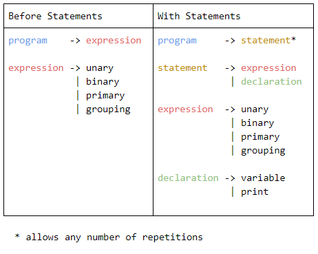

Weekly Goals
Week 13
- Respec the parser to minn's language requirements. It needs to have a working nested output and evaluate all the simple grammar in the Minn scanner.
- Finish the Lox interpreter and begin to respec that into an interpreter for Minn (at least have the visitor pattern structure done).
Week 14
- Finish respeccing the basic parser to minn's language requirements.
- Start respeccing the basic interpreter to minn's language requirements.
Week 15
- Finish respeccing the basic interpreter to minn's language requirements.
- Complete research on implementing statements and state.
- Complete research on variables.
Week 16
- Fix the issues that came from finishing the minn interpreter and parser, such as the token print issue where it displays the data locations of the tokens and not the data in the tokens.
- Start researching environments and think about how to implement them into minn.
My Research and What I Learned
Statements and State
Currently my language can only evaluate one expression, it can't hold variables and it can only comprehend one line of instruction. Statements will allow my program to have variables, print to a console, and evaluate multiple lines of instruction - all of which are necessary for a functioning programming language.
Statements are actually incredibly easy to implement into a programming language if expressions are already implemented. Instead of our entire language being one expression as it operates currently, our programs should be a series of statements, which are either expressions (an operation, like math, comparison, or logic) or declarations (like variables being created or printing an output to the console). In order to implement these statements, I just change the syntactic grammar of the language (as covered in Journal 3) and make the very first rule of our grammar any number of statements, and add a new rule where statements are either expressions (everything I've worked with in the language up until now) or declarations (variable creation or print statements).
Additionally, I will have to change the parser's and interpreter's behaviors to parse and interpret the list of statements seperately, but that is quite easy. I just have to convert the parser and interpreter inputs from an individual expression object, to an ArrayList of statement objects.

The image above shows how the syntactic grammar, the structure of my language, will change with statements. There is still full functionality that I had before with expressions, but by changing the structure I allow more than just one expression, along with a new type of statement, declarations, that will be used to implement variables into the language.
Variables
The implementation of variables is fairly easy in the language already. In the scanner, the keywords for var and = are already recognized, along with the value of the variable being recognized as a value and the name as an identifier.
In the parser, I will rewrite the strucutre of the code to reflect the changes made above to the syntactic grammar. Each statement will be checked if it's a variable declaration. If the statement is a variable declaration, it parses it as such, returning instructions to the interpreter to store the value. If the statement is actually just an expression, it's passed through the part of the parser I've already written.
Finally, in the interpreter, variable declarations will affect an "environment" where all the variable's names and values are stored and updated, allowing for future reference. Additionally the primary type expression (just data like numbers and strings) will now include an indentifier sub-type so any plain identifiers recognized in the code become references to stored variables, allowing users to reference the variables they've declared, adding functionality to the programming language.
There's more functionality that can be added to variables, such as scope limiting, unmutable variables, and reassignment, but those can be added quickly later down the line and are less important than adding functions which I will be researching very soon.
Environments
Environments are incredibly simple and most of the research, it turns out, is something I've already worked with on this project. Basically an environment is just a hash map (as researched in journal 2) and is a key/value storage of variable names and their respective values. This environment allows variables to be added when they're declared, and later referenced by the interpreter when evaluating expressions that contain references to stored values.
Everything in the research section of this journal was researched on craftinginterpreters.comr
Accomplishments
Week 13
- I finsihed respeccing the parser to minn's language requirements but there's an issue where I'm displaying the expressions's data locations instead of their values which I can't figure out.
- Instead of putting multiple screenshots of my code underneath this, I'm going to link directly to the file on github, which has comments in it identifying each section of the parser (not explaining it, the functions of the parser are explained in previous journals).
- I am behind on my goals and progress for this week however because I haven't worked on or even started respeccing the interpreter for Minn because I'm stuck on this parser issue.
- I actually don't have anything to add for finishing the lox interpreter this week, because I finished it last week so all of that code is in the week 12 accomplishments section of journal 4.
Week 14
- Echoing week 13 accomplishments, the respecced parser file is linked here with comments and finished, but the printer file is having some issues. I haven't begun to respec the interpreter because I still can't display what I need from the parser file because the printer is displaying data locations of expressions, not the actual values of expressions. (Instead of showing 5 + 3 * 2 it shows things like minn.Expr$Binary@7f690630 which is a data location).
Week 15
- I did finish respeccing the basic interpreter to minn's language requirements, it can evaluate simple mathematical expressions and adheres to the syntax I designed for minn.
- Aside from finishing the respeccing so far, almost all of my other accomplishments were research related. I completed research on statements and state, along with implementing variables on a basic level, as both are reported above in this journal.
Week 16
- I attempted to solve my data location issue but I can't seem to solve it. I need to do more debugging and research to solve it.
- I started and actually finished researching enviornments and their implementation because they were far easier than I thought they would be, see the research secion above for more information on environments.
Reflection on Goals and Timeline
Goals
I have been falling behind on some goals and getting ahead on others, going to show how unpredictable learning about this subject can be. Things are either deceptively easy or deceptively difficult. My overall ability to meet goals averages out as I'm behind on some and ahead on others. I think I've been able to meet most of the goals I set for myself each week (aside from week 15/16 with the issue I'm having with my parser) but perhaps my goals aren't ambitious enough to meet my timeline deadlines becausse I feel I'm falling behind on my overall timeline.
Timeline
Overall I'm falling behind on my timeline to meet the April 20th and 21st deadline. I still haven't implemented variables or even researched branching and functions. Due to the coronavirus however, I have a lot more time to focus on my project and catch up, along with the deadlines possibly being postponed. I plan to spend more time each day working on my project to get ahead and make it into something I'm truly proud of. I think I'm about 1.5 weeks behind where I ideally would be, but that's 1.5 weeks of school worktime which amounts to a little over a full day of working from home, which makes me believe if I work hard I can catch up very quickly.